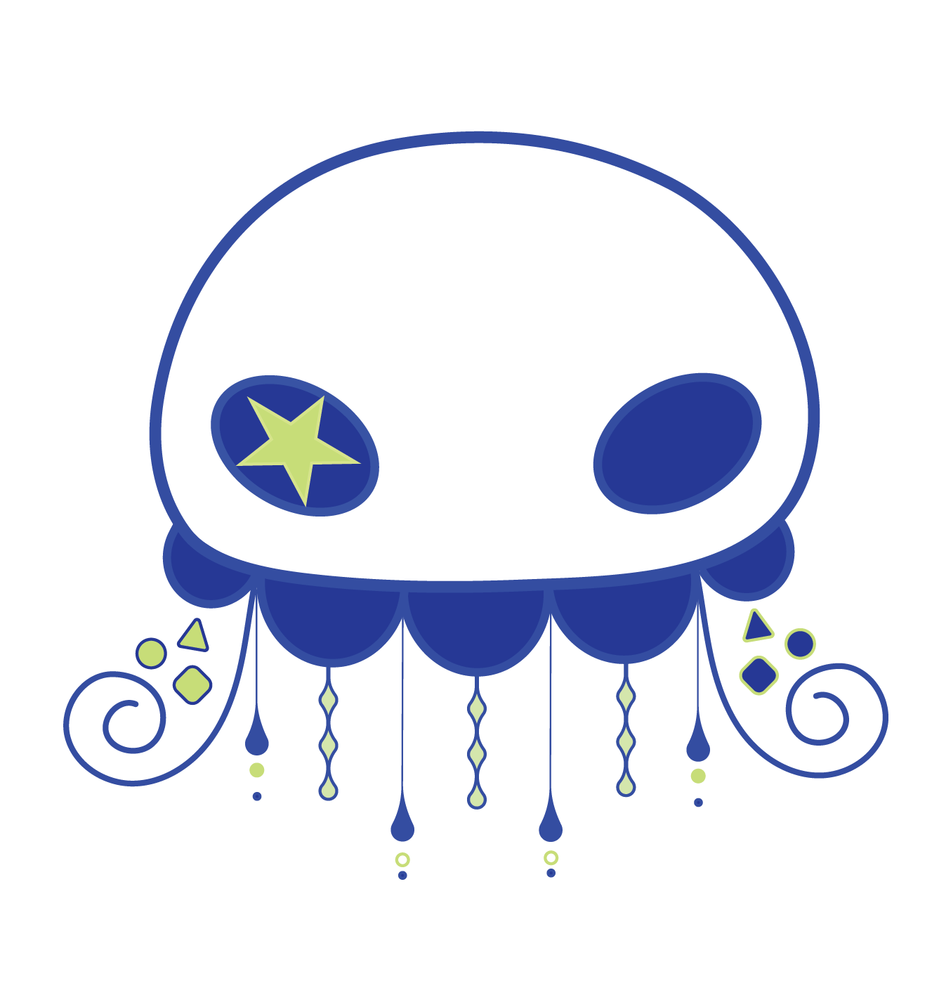
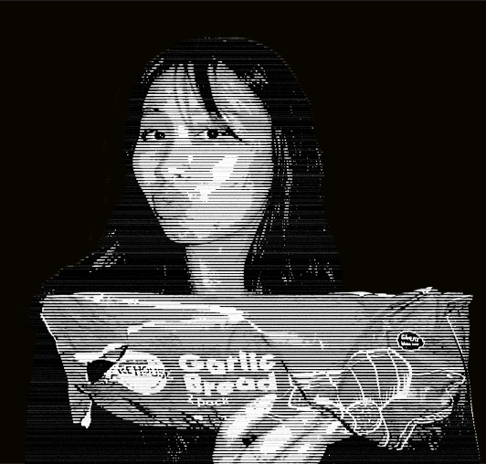
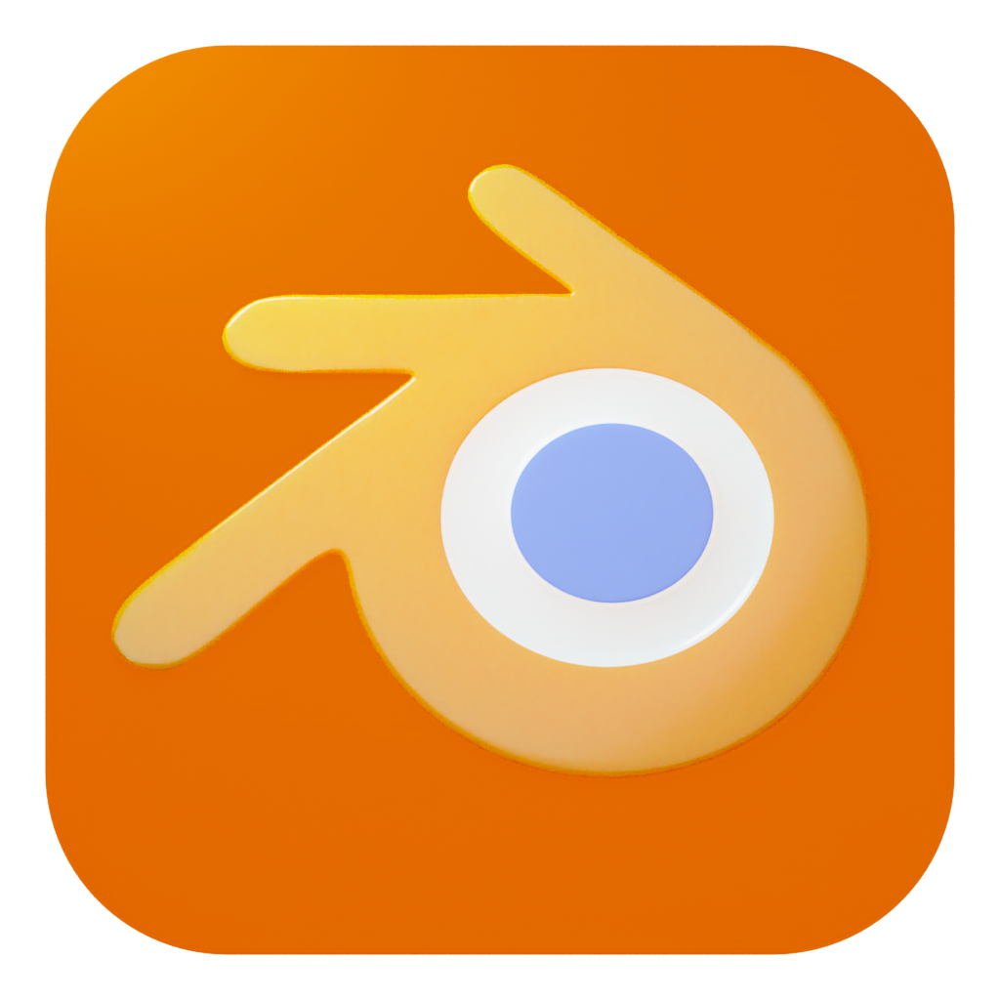
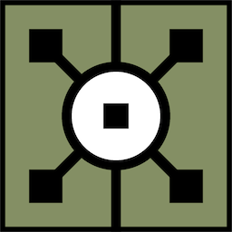
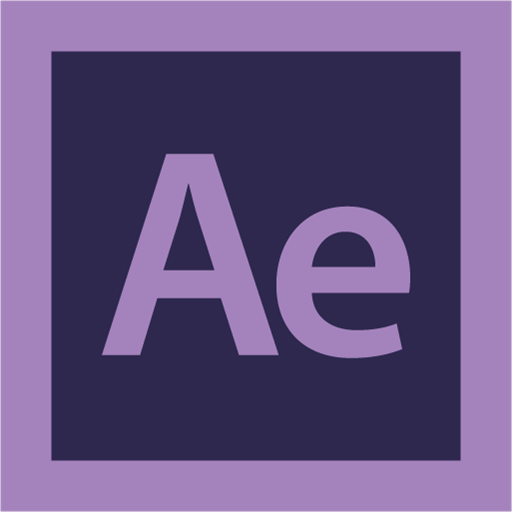

<!doctype html>
<html lang="en">
<head>
  <meta charset="utf-8" />
  <meta name="viewport" content="width=device-width,initial-scale=1" />
  <title>About — Riina Sasaki</title>
  <link rel="stylesheet" href="style.css" />
</head>
<body class="theme-root2">
  <header class="site-header">
         <aside class="sidebar">
  
  <div class="sidebar-top">
      <div class="sidebar-top">
     <div class="sidebar-header">
    
    <h1 class="sidebar-title">Riina Sasaki</h1>
  </div>
    <nav>
      <a href="index.html" class="nav-link">HOME</a>
      <a href="works.html" class="nav-link">WORKS</a>
      <a href="about.html" class="nav-link">ABOUT ME</a>
    </nav>
  </div>

  <div class="sidebar-bottom">
    <a href="contact.html" class="nav-link">CONTACT</a>
     <p class="muted">Email: <a href="mailto:your.email@example.com">riinasasaki789@gmail.com</a></p>
      <p>Phone number: <a href="">0412 885 803</a></p>
  </div>
</aside>

  </aside>
  </header>

  <main class="container about-grid">
    <article class="about-card">
      <h2>About Me</h2>
      <p>
        I am a 3D designer specializing in the creation of immersive environments and dynamic animations. My creative process revolves around experimenting with diverse visual styles and integrating multiple software platforms such as Blender and TouchDesigner to deliver innovative, generative visuals for interactive installations and other works. I enjoy pushing boundaries by combining traditional 3D workflows with generative techniques, allowing my projects to explore new aesthetic possibilities and multimedia experiences. Alongside my focus on 3D design, I also have a passion for videography, often blending footage and digital content to create visually compelling narratives. I am experienced in coding basic websites to showcase interactive and multimedia elements, ensuring my digital presence reflects the multidisciplinary nature of my work. Continuously driven by curiosity, I dedicate time to researching and refining advanced animation techniques, always striving to infuse my projects with deeper conceptual meaning and emotional resonance. I am excited to further expand my skills and contribute my passion to forward-thinking creative teams and innovative projects in the digital media and design industry.
      </p>


      <h3>Skills & Tools</h3>
      <ul>
        <li>3D modeling & Animations(Blender & Nomad Sculpt)</li>
        <li>Compositing (After Effects)</li>
        <li>Real-time visuals (TouchDesigner)</li>
        <li>Basic UI/UX</li>
      </ul>

      <h3>Contact</h3>
      <p class="muted">Email: <a href="mailto:your.email@example.com">riinasasaki456@gmail.com</a></p>
      <p>Phone number: <a href="">0412 885 803</a></p>
    </article>

    <aside class="visual-side">
      <div class="frame-photo">
        
      </div>
    </aside>

    <div class="software-box">
    <h2>SOFTWARES</h2>
    <div class="software-icons">
      
      
      
      
      
      
     
    </div>
  </div>

   <div class="hobby-box">
      <h2>Hobbies</h2>
      <ul>
        <li>sketching & illustrations</li>
        <li>3D modelling & animations</li>
        <li>Cooking and Eating</li>
        <li>Gaming</li>
      </ul>
      <h3>Education</h3>
      <p>Bachelor's of Design in Digital media RMIT</p>
     
    </div>
  </div>

  
  </main>

  <footer class="site-footer">
    <small>© <span id="year-about"></span> Riina Sasaki — Student Portfolio</small>
  </footer>

  <script src="script.js" defer></script>
</body>
</html>

